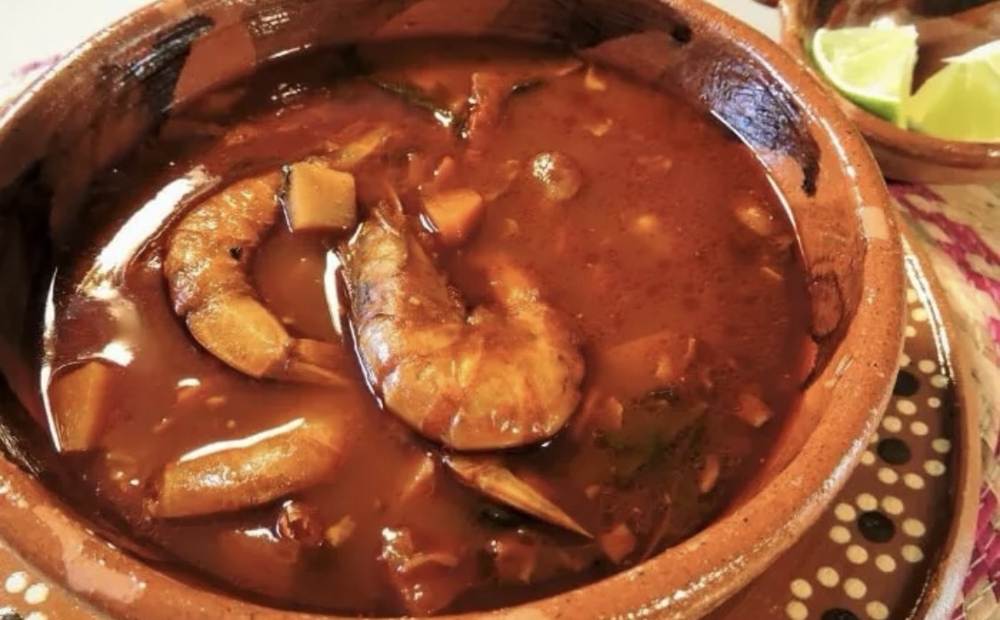

Recetas de Cocina
Tamales de cazuela
(6–8 porciones)
Los Tamales de Cazuela son una forma práctica y deliciosa de disfrutar tamales en familia: en lugar de envolverlos uno a uno, se prepara toda la masa y el relleno en una sola cazuela de barro. El resultado es una textura suave, esponjosa y muy jugosa, con el sabor concentrado de la masa y el pollo al chipotle.
 Ingredientes:
Ingredientes:
-
Para la masa:
- 600 g de masa de maíz para tamal (de buena calidad)
- 150 g de manteca de cerdo (a temperatura ambiente)
- 1 cucharadita de sal
- 250 ml de caldo de pollo caliente
-
Para el relleno:
- 3 pechugas de pollo cocidas y deshebradas
- 3 chiles chipotles adobados, picados finamente
- ½ taza de caldo del pollo
- Sal y pimienta al gusto
-
Para armado y cocción:
- 8–10 hojas de plátano pasadas por la llama
- 1 cazuela de barro grande con tapa
-
Preparar el relleno:
- Calienta un chorrito de aceite en sartén; añade el pollo y los chipotles.
- Vierte ½ taza de caldo; sazona con sal y pimienta. Cocina 5 min removiendo. Reserva tapado.
-
Batir la masa:
- Mezcla la masa y la sal en un tazón.
- Añade la manteca y bate hasta integrar.
- Agrega el caldo caliente poco a poco, batiendo hasta que la masa flote en agua.
-
Forrar la cazuela:
- Corta las hojas de plátano en rectángulos para cubrir fondo y costados; superpón y presiona para evitar huecos.
-
Ensamblar:
- Extiende la mitad de la masa sobre las hojas; añade el relleno al centro y cubre con el resto de la masa.
- Dobla las hojas hacia el centro para cerrar.
-
Cocción:
- Tapa y cocina a fuego medio-bajo durante 60 min sin destapar.
- Apaga y deja reposar 10 min con la tapa puesta.
-
Desmoldar y servir:
- Retira la tapa con cuidado; despega los bordes con una espátula húmeda.
- Sirve con salsa verde o roja y crema fresca.
- Si no consigues hojas frescas, usa congeladas y pásalas por agua caliente.
- Ajusta el caldo si la masa queda muy densa; debe quedar aireada y ligera.
- Agrega achiote a la masa para dar color y sabor extra.
- Sustituye el pollo por cerdo deshebrado para variar el relleno.
Mondongo
El
Mondongo
es un guiso caldoso de pancita de res y garbanzos en salsa roja, tradicional en la cocina mexicana. Su sabor profundo y la textura tierna lo hacen reconfortante para reuniones familiares o celebraciones.

Ingredientes:
- 1 kg de mondongo de res bien limpio
- 1 taza de garbanzos cocidos, escurridos
- 3 jitomates maduros (grandes
- 1 cebolla mediana
- 2 dientes de ajo
- 2 chiles guajillo sin semillas ni venas
- 1 cucharada de comino molido
- 1 cucharada de orégano seco
- 2 L de agua o caldo de res
- Aceite vegetal, sal y pimienta al gusto
- 1 manojo de cilantro fresco para servir
- Limones partidos para acompañar
Preparación:
-
Blanquear:
- Hierve el mondongo con un chorrito de vinagre durante 10 min; desecha el agua.
-
Cocción principal:
- Cubre con agua o caldo, cocina tapado 1½–2 h hasta que esté tierno.
- Reserva 2 tazas de caldo y escurre el resto.
-
Salsa base:
- Asa jitomates, cebolla, ajo y guajillo; licúa con caldo reservado y cuela.
-
Guisar:
- Sofríe la salsa 3–4 min, añade mondongo, garbanzos, especias y caldo; cocina 15–20 min.
-
Servir:
- Espolvorea cilantro y acompaña con limones, tortillas o tostadas.
Consejos y variaciones:
- No sobrecocines para mantener el mondongo firme.
- Ajusta el picante quitando más o menos semillas de los chiles.
- Agrega papas en cubos a mitad de cocción para un extra de sustancia.
- Prueba con tocino frito para un toque ahumado.
Caldo de Camarón
Este Caldo de Camarón combina el sabor intenso del marisco con verduras frescas en un consomé ligero y reconfortante. Ideal para días fríos o para quienes buscan un platillo nutritivo y lleno de sabor.
Ingredientes:
- 600 g de camarones medianos, con cáscara y cabeza
- 2 L de agua
- 3 jitomates maduros
- ½ cebolla blanca
- 2 dientes de ajo
- 1 chile serrano (opcional, sin semillas)
- 2 papas medianas peladas y en cubos
- 2 zanahorias en rodajas
- 1 taza de ejotes troceados
- 1 ramita de epazote (opcional)
- Aceite vegetal, sal y pimienta al gusto
- Cilantro fresco picado para servir
- Limones partidos para acompañar
Preparación:
-
Caldo base:
- Hierve los camarones 3 min, retira la carne y cuela el caldo.
-
Salsa:
- Licúa jitomates, cebolla, ajo, chile y un poco de caldo; cuela.
-
Verduras:
- Sofríe la salsa 3–4 min, añade el caldo restante, papas, zanahorias y ejotes; cocina 10–12 min.
-
Camarón:
- Incorpora la carne de camarón, ajusta sazón y cocina 3–4 min más.
-
Servir:
- Sirve caliente con cilantro, limones y tortillas o tostadas.

Consejos y variaciones:
- Usa caldo de pescado y reduce 5 min de cocción para más concentración.
- Incorpora chayote o calabacita para enriquecer el caldo.
- Añade crema al final para un toque cremoso.
- Sustituye el serrano por chile de árbol para otro aroma.
Chilpachole de Jaiba
El Chilpachole de Jaiba es un caldo espeso típico del estado de Veracruz, hecho a base de cangrejo azul y chiles secos. Tiene un sabor potente y marino, ideal para los amantes de los platillos del mar.
Ingredientes:
- 4 jaibas enteras limpias (pueden ser congeladas)
- 2 L de agua
- 4 jitomates asados
- 2 chiles guajillo sin semillas
- 1 chile ancho sin semillas
- 2 dientes de ajo
- ½ cebolla
- 1 rama de epazote
- 2 cucharadas de harina de maíz
- 3 cucharadas de aceite
- Sal y pimienta al gusto
- Limón y tortillas para acompañar

Preparación:
-
Preparar el caldo:
- Hierve las jaibas en los 2 litros de agua durante 15 minutos. Reserva las jaibas y cuela el caldo.
-
Hacer la salsa:
- Asa y licúa los jitomates, los chiles hidratados, el ajo y la cebolla con un poco del caldo. Cuela.
-
Espesar:
- Disuelve la harina en media taza de caldo frío.
-
Guisar:
- Calienta aceite, sofríe la salsa colada 5 minutos.
- Agrega el caldo de jaiba caliente, la harina disuelta y el epazote. Cocina 10 minutos más.
- Incorpora las jaibas cocidas y cocina 5 minutos más a fuego bajo.
-
Servir:
- Sirve caliente acompañado de limón, tortillas y chile al gusto.
Consejos y variaciones:
- Puedes usar sólo la carne de jaiba para un caldo menos complicado de comer.
- Si quieres un chilpachole más picante, agrega un chile chipotle seco.
- El epazote es opcional, pero da un sabor muy especial al caldo.
- Sirve con arroz blanco como acompañamiento tradicional.
Barbacoa de Res
La Barbacoa de Res es uno de los platillos más emblemáticos de México. Cocinada tradicionalmente en horno de tierra, esta versión casera reproduce los sabores ahumados y jugosos en una olla convencional.
Ingredientes:
- 2 kg de espaldilla o chambarete de res
- 6 chiles guajillo sin semillas
- 2 chiles ancho sin semillas
- 4 dientes de ajo
- 1 cucharada de orégano seco
- 1 cucharadita de comino
- 2 hojas de laurel
- 1 taza de jugo de naranja
- ½ taza de vinagre blanco
- 1 litro de agua o caldo de res
- Sal y pimienta al gusto
- Hojas de plátano (opcional)
- Cilantro, cebolla y limón para servir.

Preparación:
-
Marinar:
- Licúa los chiles hidratados, ajo, jugo de naranja, vinagre, orégano, comino, sal y pimienta.
- Marina la carne mínimo 4 horas o de preferencia toda la noche.
-
Preparar la olla:
- Coloca hojas de plátano en el fondo si usas.
- Acomoda la carne y vierte toda la marinada sobre ella.
- Añade el laurel y el litro de agua o caldo.
-
Cocinar:
- Tapa bien y cocina a fuego muy bajo durante 4–5 horas, hasta que la carne esté extremadamente suave.
-
Servir:
- Deshebra la carne, mezcla con sus jugos y sirve en tacos con cebolla, cilantro y limón.
Consejos y variaciones:
- Para un sabor aún más ahumado, cocina la barbacoa en horno a 150°C durante 6 horas, tapada con papel aluminio.
- Usa costillas de res para una textura más jugosa y grasosa.
- Agrega hojas de aguacate secas para un aroma tradicional.
- Acompaña con consomé de la misma cocción y arroz rojo.
Chilaquiles Rojos
Los chilaquiles rojos son un clásico mexicano consistente en totopos crujientes bañados en salsa de jitomate y chile serrano, coronados con queso, crema y cebolla. Se sirven recién hechos para conservar textura y sabor, y son ideales para un desayuno rápido o comida reconfortante.
Ingredientes:

-
Totopos:
- 8–10 tortillas de maíz (del día anterior), cortadas en triángulos
- Aceite vegetal para freír
-
Salsa roja:
- 6 jitomates maduros grandes
- 2–3 chiles serranos (ajusta al gusto)
- ¼ de cebolla blanca
- 1 diente de ajo
- 1 pizca de orégano seco
- Sal al gusto
-
Para servir:
- 100 g de queso fresco desmoronado
- 100 ml de crema ácida o crema mexicana
- ½ cebolla morada fileteada muy delgada
- Hojas de cilantro fresco (opcional)
- Aguacate en cubos (opcional)
Preparación:
-
Freír los totopos:
- Calienta abundante aceite en un sartén hondo a fuego medio-alto.
- Fríe los triángulos de tortilla por tandas hasta que estén crujientes y ligeramente dorados.
- Escurre sobre papel absorbente y sala ligeramente.
-
Hacer la salsa:
- Hierve jitomates, chiles, cebolla y ajo en agua con una pizca de sal durante 6–8 min, hasta que los jitomates cambien de color.
- Licúa con un poco del agua de cocción y el orégano; ajusta de sal.
- (Opcional) Cuela la salsa si prefieres textura más tersa.
-
Montaje:
- Calienta la salsa en el sartén; cuando empiece a hervir, baja el fuego y añade los totopos.
- Revuelve suavemente para que se impregnen sin deshacerse.
-
Servir:
- Distribuye los chilaquiles en platos hondos.
- Corona con queso fresco, crema, cebolla morada y cilantro.
- Acompaña con cubos de aguacate si lo deseas.
Consejos y variaciones:
- Si te gustan más crujientes, añade los totopos sólo al final y calienta sólo 30 s en la salsa.
- Sustituye los chiles serranos por chiles de árbol para un picante más ahumado.
- Incorpora pollo deshebrado o huevo estrellado para un desayuno más contundente.
- Para versión verde, cambia jitomates por tomatillos y serranos por jalapeños.
Consomé de Res
Este consomé de res al estilo Veracruz es un caldo limpio y aromático, con carne jugosa y verduras tiernas. Las hierbas como epazote y laurel le dan un toque auténtico, perfecto como entrada o plato principal reconfortante.
Ingredientes:
- 500 g de chambarete, chamorro o espaldilla de res con hueso
- 1 cebolla mediana, partida a la mitad
- 2 dientes de ajo enteros
- 1 hoja de laurel
- 1 ramita de epazote (o pizca de comino)
- Sal y pimienta al gusto
-
Verduras para acompañar:

- 1 zanahoria grande, en rodajas
- 1 papa mediana, en cubos
- 1 calabacita, en medias lunas
- 1 chayote, en cubos
- 100 g de ejotes, limpios y enteros
- 1 elote tierno, cortado en trozos
Preparación:
-
Lavar y sellar la carne:
- Enjuaga la res y sécala.
- (Opcional) Dora ligeramente en la olla con unas gotas de aceite para intensificar sabor.
-
Cocer el caldo:
- En una olla grande, coloca la res, cebolla, ajo, laurel y suficiente agua (aprox. 2 L) para cubrir.
- Sazona con sal y pimienta.
- Hierve a fuego alto; al primer hervor baja al mínimo y cuece tapado 1 h.
-
Colar el consomé:
- Retira la carne y las hierbas, cuela el caldo para que quede claro. Regresa el líquido a la olla.
-
Agregar verduras:
- Añade la zanahoria y la papa; cocina 10 min.
- Incorpora calabacita, chayote, ejotes y elote; cocina 8–10 min más, cuidando que no se deshagan.
-
Rectificar sazón y servir:
- Ajusta de sal y pimienta. Si lo deseas, añade un poco más de epazote al final.
- Sirve bien caliente en tazones hondos.
Consejos y variaciones:
- Para un sabor más profundo, reemplaza parte del agua por caldo de res concentrado.
- Agrega un trozo de chile guajillo al cocer el caldo para un toque suave de color y aroma.
- Incorpora espinacas o acelgas al final para mayor frescura y color.
- Acompaña con chiles en vinagre y unas gotas de limón al servir.